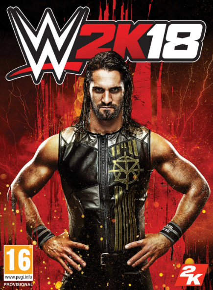
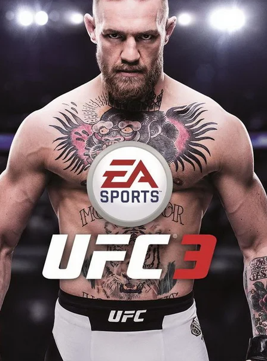

Los videojuegos deportivos están basados o son una simulación virtual de las distintas disciplinas deportivas reales.
Este subgénero incluye a todos los videojuegos que están basados en un deporte real. Los simuladores de deportes además se agrupan en subcategorías de modo que cada una representa a un deporte específico (fútbol, tenis, baloncesto, juegos olímpicos, etcétera.). Aunque la mayoría de los juegos representan a un único deporte, algunos se dedican a representar a varios deportes, aunque de manera mas sencilla. Se puede destacar además que algunos juegos deportivos se especializan en representar al deporte de la manera más realista posible, mientras que otros agregan elementos fantásticos y personajes sobrehumanos para aumentar la acción y la velocidad del juego.
Este subgénero de los juegos deportivos agrupa a los videojuegos que representan competencias deportivas de combate y/o artes marciales reales, se diferencian de los juegos de lucha porque los personajes están limitados por las leyes de la física, pudiendo utilizar solamente movimientos humanamente posibles y por el reglamento del deporte en cuestión. Los distintos deportes de combate que fueron adaptadas en videojuegos son: Boxeo (Punch-Out!!, Fight Night); Lucha libre (Saturday Night Slam Masters, Fire Pro Wrestling, WWF Super WrestleMania); Artes marciales mixtas (UFC 2009 Undisputed, EA Sports MMA); Judo (Brian Jacks Uchi Mata, Moero 7!! Juudou Warriors); Sumo (64 Oozumou, Tsuppari Oozumou), entre otros.
 